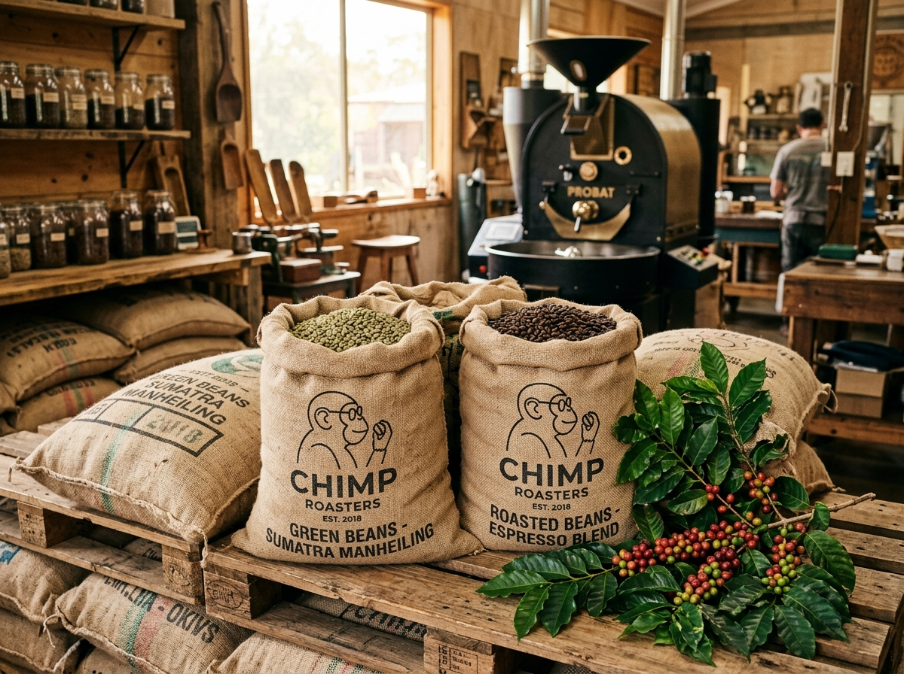

Rooted in Curiosity, Roasted with Conscience
Chimpanzees are nature's supreme foragers—selective, endlessly curious, and naturally drawn to the ripest fruits in the forest. At Chimp Café, we bring that exact primal discernment to specialty coffee.
We never source from mono-crop clearings. Every single green bean we roast is cultivated under diverse rainforest canopies that preserve wildlife corridors, protect endangered birds, and honor organic indigenous agroforestry practices in Sumatra, Ethiopia, and Costa Rica.
100% Canopy Shade Grown
Thriving ecosystems nurture slower cherry maturation, producing denser, more complex natural fruit sugars.
Primate Habitat Direct-Trade
We pay 2.5x Fair Trade minimums directly to smallholder farming families and preserve vital wild ape habitats.
Zero-Waste Husk Packaging
Our takeout cups and merchandise are crafted from upcycled coffee chaff and compostable plant starch.